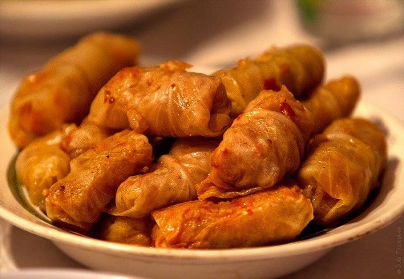

Блюда украинской кухни, которые нужно попробовать!
Борщ

Какой же украинец без борща ? Этим традиционным первым блюдом обязательно потчуют иностранцев. В кулинарных книгах мы найдем более 50 рецептов борща, ведь в каждом регионе его готовят по-разному. Наваристый мясной, приправленный салом… Или же постный с фасолью либо грибами – такой варят во время поста, и вегетарианцы тоже будут довольны. Вместо мяса можно класть рыбу. Кроме традиционных свеклы, картофеля, моркови, лука, капусты и томатов, чего только ни добавляют в борщ для пикантности! В некоторых рецептах есть даже яблоки, сухофрукты, чернослив! К борщу часто подают пампушки с чесноком. Фестивали борща проводится в одноименном поселке Борщев на Тернопольщине, а также в других регионах Украины. В октябре такой фестиваль состоялся в Харькове – уже третий год подряд.
Сало

Недаром говорят: сало – украинский наркотик. Без него нам просто никуда. А сколько анекдотов о сале и украинцах! Один кум говорит другому: «Ты слышал, что от сала развивается склероз?» А тот ему в ответ: «А я-то думаю, как съем утром кусок сала, так целый день и не вспоминаю, что есть хочется!» Существует множество рецептов засолки сала. Простейший: измельчить чеснок, смешать с перцем, натереть смесью подчеревину или сало и выдержать в холодильнике дня три. Можно добавить душистые специи.
Котлеты по-киевски

Интересно, что на «авторство» рецепта котлет из отбитого куриного филе, в которое заворачивается кусочек сливочного масла, претендуют, кроме Украины, Франция и Америка. Кулинарные легенды гласят, что котлеты по-киевски могли прийти оттуда. Они были очень популярны в советских ресторанах, потом их незаслуженно забыли, но сейчас легко можно найти места, где подают это блюдо.
Голубцы

Голубцы: в капустные листья заворачивают мясную начинку. В Книге рекордов Закарпатья зафиксировано 25 видов голубцов, которые приготовили на фестивале в одном из сел. Кстати, на Закарпатье считалось, что если девушка умеет делать мелкие голубцы, то быстрее выйдет замуж и будет хорошей женой.
Торт "Киевский"

Ранее считалось чуть ли не долгом привезти из Киева на гостинец торт «Киевский». Теперь его можно купить едва ли не в каждом украинском городе. Ранее на Киевской кондитерской фабрике, которая сейчас принадлежит Roshen, была разработана оригинальная рецептура. Предание гласит, что в холодильник забыли поставить белки, предназначенные для бисквита, а потом, скрывая ошибку, поэкспериментировали. Так и появился торт, любимый не одним поколением.